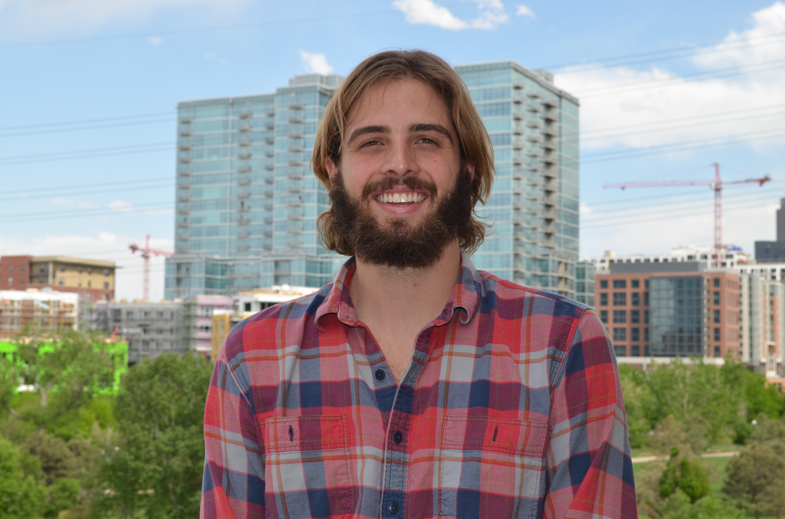

The Development Team
Tom Clukies - Forest Wizard

I've recently traveled internationally and gained a new understanding, respect, and love for the Earth. I have found
a new love for creativity and travel. This has pushed me to explore a new field where I could tap into this creative
side technologically. Additionally, I wanted to find a way to broaden my Finance and Information Management degrees.
Taking these factors into account, I have decided to pursue a career in Web Development and enroll in the Galvanize
Immersive Web Development course. I am excited for the opportunities that can arise from having an increased
array of skills.
As a student in this program I enjoy learning and growing exponentially every day. I love the style of learning in
this largely dynamic field. I plan to learn outside of the program bounds, and develop my skills as much as possible
in the coming months, and beyond. I will also be searching adamantly for a career in the front end and/or back
end development field around the Greater Denver Area, although I am flexible with location. I'm excited about
this new field and the value I can add to any firm. Aside from coding, I have an intense love for all things
outdoors. I enjoy travel, cooking, yoga, and delicious beer.